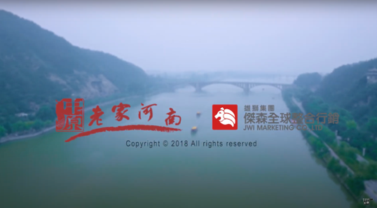
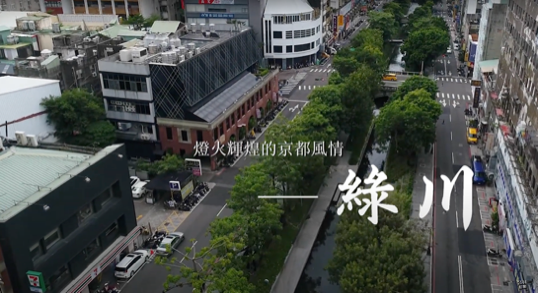
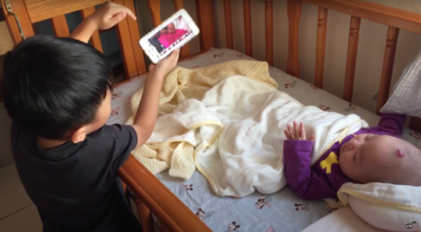
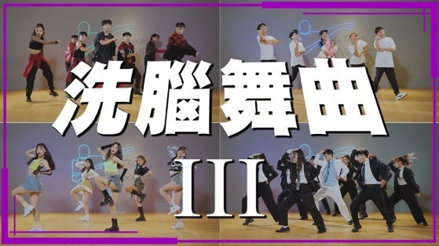

吳 榮 展 JUNG CHAN, WU
媒體運營 ⎪ 導演與表演 ⎪ 攝影後製剪輯 ⎪ 企劃編劇寫作
核心成就摘要
產學與專案
歷年執行教育部、臺南市美術館等公部門與企業產學合作專案等十餘案。
個人創作競賽
榮獲 myfone 行動創作獎首獎、MOD金片子大賽等二十餘項獎項肯定。
指導學生競賽
指導學生榮獲教育部我的未來我作主金獎、日本亞洲國際兒童影展外務大臣賞等二十餘項獎項肯定。
社群影響力
經營自媒體頻道，累積 6.4 萬訂閱，創造十餘支 10 萬 – 400 萬觀看數之網路熱門影音。
專業領域與擅長軟體
專業領域
平台品牌建立、影音營運、行銷策劃
劇本創作、廣告企劃、故事包裝
現場導演調度、表演指導、影像美學
專業攝影、後製剪輯、特效與調色
擅長軟體工具
Premiere、After Effects、Photoshop、Final Cut Pro、剪映
YT Studio、Meta Business
ChatGPT、Gemini、Antigravity、Codex
教育背景
崑山科技大學 媒體藝術研究所
碩士學位論文名稱：手機電影攝製之研究-以《湖邊的女神》、《渴望》為例
世新大學 廣播電視電影學系
教職與業界經歷 / 行政專案
朝陽科技大學 — 兼任講師
於資訊管理系、通識中心教授媒體製作與 AI 相關課程。
新板希爾頓酒店 — 媒體運營副理
企劃製作新板希爾頓酒店、台北凱撒大飯店、萬華凱達大飯店、板橋凱撒大飯店餐飲事業社群影音內容。
高拐娛樂工作室 — 導演
承接多媒體影音委託製作。
中國武夷學院 — 兼任講師 (遠端教學)
於廣播電視編導科教授媒體製作相關課程。
崑山科技大學 — 兼任講師
於視訊傳播設計系、公共關係暨廣告學系教授媒體製作相關課程。
長榮女中 — 兼任教師
教授多媒體設計科相關課程。
青年高中 — 專任 / 兼任教師
教授電影電視科、表演藝術科相關課程。
FLOMO 觀光工廠 — 攝影組長
製作觀光工廠各式行銷影音。
永慶房產集團 — 攝影師
執行集團內各式影音需求。
文藻外語大學 — 創意編導
於傳播藝術系執行經濟部產學合作專案。
| 執行年度 | 擔任職位 | 專案名稱 |
|---|---|---|
| 2018 | 導演 | 中國河南省旅遊局旅遊形象短片 |
| 2018 | 導演 | 臺南市美術館紀錄片 |
| 2018 | 導演 | 前瞻水環境亮點工程紀錄片 |
| 2019 | 導演 | 臺南市國際身心障礙者日形象短片 |
| 2020 | 導演 | 教育部我的未來我做主反毒微電影廣告 |
| 2020 | 導演 | 前瞻水環境亮點工程紀錄片 |
| 2021 | 出題教師 | 110四技二專統一入學測驗全國模擬考藝術群影視類 |
| 2022 | 出題教師、審題委員 | 111四技二專統一入學測驗全國模擬考藝術群影視類 |
| 2022 | 審查委員 | 教育部反霸凌專線電話1953廣告 |
| 2023 | 出題教師、審題委員 | 112四技二專統一入學測驗全國模擬考藝術群影視類 |
| 2023 | 評審委員 | 第六屆教育部我的未來我作主微電影競賽 |
| 2023 | 導演 | 臺中市政府藝術家到校計畫紀錄片 |
| 2024 | 出題教師、審題委員 | 113四技二專統一入學測驗全國模擬考藝術群影視類 |
| 2025 | 出題教師、審題委員 | 114四技二專統一入學測驗全國模擬考藝術群影視類 |
| 2025 | 評審委員 | 第七屆教育部我的未來我作主微電影競賽 |
歷年作品集分類

工商專案執行企業與品牌行銷影片製作，我主要擔任企劃、製片、導演的職務
觀看作品影片
產學合作執行公部門委託之影片製作專案或產學合作計畫，主要合作對象為教育部與各縣市政府局處單位，從企劃拍攝到後期製作皆由學校單位執行
觀看作品影片
個人比賽個人比賽作品皆由我擔任編劇導演剪接工作，目前累積達超過20個以上的得獎作品
觀看作品影片每學期我在課堂上都會指派學生的期末作業，在五六月期間也會於校外影城舉辦畢業影展。影展作品曾在各大知名學生比賽中得獎，如：教育部微電影競賽、MOD 金片子大賽、新北學生新星獎……等
觀看作品影片
自媒體頻道目前 YouTube 頻道【高中生拍什麼】主要內容為舞蹈企劃影片。頻道本身與臺中市青年高中表演藝術科合作，因此每年也吸引了許多喜愛舞蹈的國中生報名入學
觀看作品影片歷年獲獎紀錄
| 獲獎年份 | 名次 | 獎項名稱 | 授頒單位 | 證明文件 |
|---|---|---|---|---|
| 2007 | 佳作 | 緯來電影台【百萬徵編劇】 | 緯來電視網 | - |
| 2015 | 金獎 | 九族文化獎櫻花祭微電影競賽 | 九族文化村 | |
| 2015 | 銀獎 | 精英電腦【How do you LIVA?】廣告創作競賽 | 精英電腦 | |
| 2015 | 佳作 | 美琪生技【微家記憶】微電影創作競賽 | 美琪生技 | |
| 2016 | 銅獎 | 中華英雄戰勝負能量短片競賽 | 中華網龍 | - |
| 2016 | 佳作 | 衛生福利部【防流感Show創意】微電影徵選 | 衛生福利部 | |
| 2016 | 佳作 | 第十屆myfone行動創作獎 | 財團法人台灣大哥大基金會 | |
| 2017 | 佳作 | 【電出你的行動通信創意】短片競賽 | 國家通訊傳播委員會 | |
| 2017 | 最佳剪輯獎 | 第五屆Toshiba幸福影展 | 台灣東芝電子 | |
| 2017 | 首獎 | 第十一屆myfone行動創作獎 | 財團法人台灣大哥大基金會 | |
| 2017 | 佳作 | 中央存款保險宣導短片競賽 | 中央存款保險公司 | |
| 2017 | 佳作 | ETF微電影創作徵選 | 臺灣證券交易所 | |
| 2018 | 佳作 | 第二屆教育金像獎 | 教育部 | |
| 2018 | 優選 | 第九屆感動99 | 華碩文教基金會 | |
| 2018 | 金獎 | 第一屆教育部我的未來我作主反毒微電影競賽 | 教育部 | |
| 2018 | 第八名 | ETF微電影創作徵選 | 臺灣證券交易所 | |
| 2019 | 銀獎 | 臺南市立美術館微電影競賽 | 臺南市立美術館 | |
| 2019 | 銀獎 | 第二屆教育部我的未來我作主反毒微電影競賽 | 教育部 | |
| 2020 | 佳作 | 臺中市環境教育宣導影片 | 臺中市政府 | |
| 2021 | 佳作 | LEXUS MY FILM短影片競賽 | 和泰汽車 | |
| 2021 | 華藝娛樂獎 | MOD金片子大賽 | 中華電信 |
| 獲獎年份 | 名次/等地 | 獎項名稱 | 授頒單位 |
|---|---|---|---|
| 2015 | 特優 | 教育部敬師月短片競賽計劃 | 教育部 |
| 2015 | 特優 | 台中環境教育微電影創作大賽 | 臺中市政府 |
| 2015 | 第二名 | 台中市反毒創意宣導短片競賽 | 臺中市政府 |
| 2015 | 佳作 | 台中市反毒創意宣導短片競賽 | 臺中市政府 |
| 2015 | 第三名 | 台中市SMILE創意微電影競賽 | 臺中市政府 |
| 2015 | 第二名 | 全國高中職創意微電影競賽【友情組】 | 南台科技大學 |
| 2015 | 第二名 | 全國高中職創意微電影競賽【熱情組】 | 南台科技大學 |
| 2015 | 佳作 | 星展銀行【點亮生命精彩】影片徵選活動 | 星展銀行 |
| 2015 | 佳作 | 第九屆日本亞洲國際兒童影展 | 日本外務省 |
| 2016 | 佳作 | 教育部221世界母語日創意概念影片徵選 | 教育部 |
| 2016 | 第二名 | 宅配通微電影競賽 | 台灣宅配通 |
| 2016 | 第一名 | 全國高中職創意微電影競賽 | 南台科技大學 |
| 2016 | 最佳潛力獎 | MOD微電影暨金片子創作大賽 | 中華電信 |
| 2016 | 入賞 | 第十屆日本亞洲國際兒童影展 | 日本外務省 |
| 2016 | 第三名 | 臺中回收讚【資源回收形象改造微電影創作比賽】 | 臺中市政府 |
| 2016 | 第三名 | 【電出你的行動通信創意】短片競賽 | 國家通訊傳播委員會 |
| 2017 | 佳作 | 得勝者影展 | 得勝者教育協會 |
| 2018 | 外務大臣賞 | 第十二屆日本亞洲國際兒童影展 | 日本外務省 |
| 2020 | 評審特別獎 | 第三屆教育部我的未來我作主反毒微電影競賽 | 教育部 |
| 2020 | 種子新星獎 | 新北學生影像新星獎 | 新北市政府 |
| 2020 | 第二名 | 台北市交通局交通安全宣導短片競賽 | 臺北市政府 |
| 2021 | 十二強 | 新北校園廣告人 | 新北市政府 |
| 2021 | 金獎 | 我的未來我作主微電影競賽【反霸凌主題】高中組 | 教育部 |
| 2021 | 銀獎 | 我的未來我作主微電影競賽【反毒主題】大專組 | 教育部 |
| 2021 | 銀獎 | 我的未來我作主微電影競賽【反毒主題】高中組 | 教育部 |
| 2024 | 第二名 | 城市印象2024港澳臺蘇短視頻創作比賽 | 香港青年團體_就是敢言 |
自傳
您好，我是榮展，目前是一名影音工作者與大學兼任講師。
我的專業是企劃編劇、導演、影視表演、攝影剪輯、AI 語言模型應用。我擅長影音製作與媒體行銷，曾在過去任教的學校裡結合課程所學，帶領學生共同經營 YouTube 頻道，目前該頻道訂閱數達 6.3 萬。以下是我的專業能力與經歷的亮點說明：
【全方位影視製片能量】
過去的創作經驗使我具備成熟的企業品牌編導與跨媒體行銷思維。在擔任企業媒體運營副理與工作室導演期間，能跳脫傳統影視分工的限制，從事企劃、編劇、導演、攝影到後製剪輯的各項工作。今年更透過導入 AI 技術，以建立全流程的獨立製作能量。
【產學融合與 AI 跨域教學實績】
兼任教職多年，擅長將業界最新的實務工作流轉化為教學核心。因應近年的生成式 AI 浪潮，我也積極將 AI 語言模型與影音創作流進行整合，並於朝陽科技大學資訊管理系與通識中心開設相關創新課程。教學方針堅持「以賽代訓」，強調學生的實務產出。
【擅長影音行銷並成功經營社群平台】
由我企劃製作的「舞曲進化史」一片在網路爆紅，在 YouTube 平台超過 300 萬次的觀看量，因此我在 2022 年七月正式成立 YouTube 頻道【高中生拍什麼】。期間製作出許多百萬流量的作品，也多次被各家網路媒體轉發報導，其中「洗腦舞曲」系列最高觀看量更達 400 萬次以上。
【行政與展演經歷】
因本身具備影音專長，過去兼任教職期間曾多次與學校老師共同執行產學合作專案，並定期擔任教育部評審委員與統測全國模擬考命題委員與審題委員。展演經驗部分，我在教學期間曾多次於新光影城辦理學生影展，目前也持續透過工作室接案的方式，為旗下學生舞者媒合各項展演活動演出。
【歷年授課課程與未來展望】
我的專長領域為自媒體經營、企劃編劇寫作、導演與表演、攝影、後製剪輯，因此過去在大專院校與高中端教授的課程為影視製作、表演藝術、AI 語言模型應用、多媒體製作⋯⋯等相關課程。
如未來有幸能進入貴校任教，希望能培養學生有成熟的影音與新媒體創作能力。短影音與自媒體行銷是現今各行業主要的行銷管道，因此能掌握這項技能，對於學生未來畢業後有相當大的助益。未來也將複製過去自媒體高流量的成功模式，結合商業設計系的特色，帶領學生製作有益於校系的各式影音與經營特色社群，期望能為學校轉化成直接的招生效益。
感謝您撥冗審閱自傳，期盼能有與貴系面試的機會。